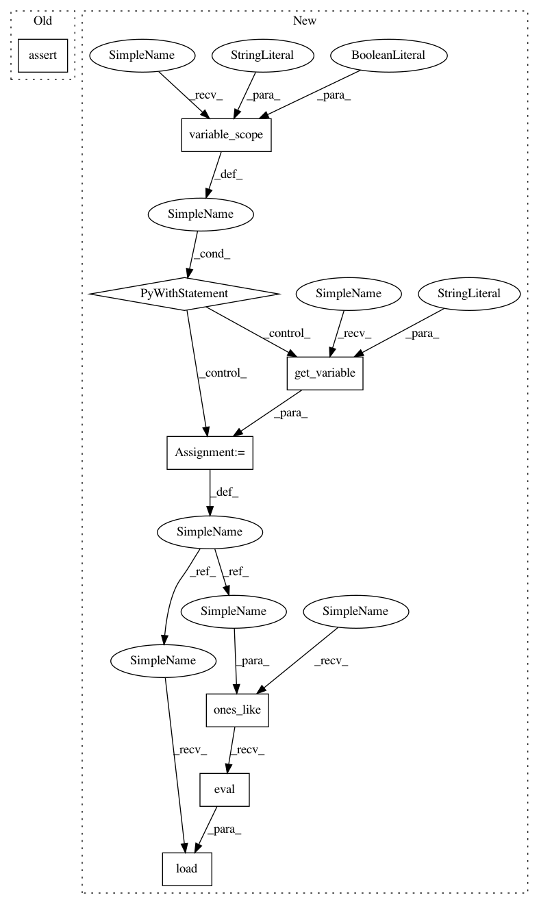

3a3bdf17ca08052309016bdfa481a58c70112abd,tests/garage/tf/policies/test_categorical_mlp_policy_with_model.py,TestCategoricalMLPPolicyWithModel,test_is_pickleable,#TestCategoricalMLPPolicyWithModel#Any#Any#Any#,101
Before Change
policy_pickled = pickle.loads(p)
action, prob = policy_pickled.get_action(obs)
assert env.action_space.contains(action)
assert action == 0
assert np.array_equal(prob["prob"], expected_prob)
prob1 = policy.dist_info([obs.flatten()])
prob2 = policy_pickled.dist_info([obs.flatten()])
After Change
env.reset()
obs, _, _, _ = env.step(1)
with tf.variable_scope("CategoricalMLPPolicy/MLPModel", reuse=True):
return_var = tf.get_variable("return_var")
// assign it to all one
return_var.load(tf.ones_like(return_var).eval())
output1 = self.sess.run(
policy.model.outputs,
feed_dict={policy.model.input: [obs.flatten()]})
In pattern: SUPERPATTERN
Frequency: 3
Non-data size: 8
Instances
Project Name: rlworkgroup/garage
Commit Name: 3a3bdf17ca08052309016bdfa481a58c70112abd
Time: 2019-04-26
Author: ahtsans@gmail.com
File Name: tests/garage/tf/policies/test_categorical_mlp_policy_with_model.py
Class Name: TestCategoricalMLPPolicyWithModel
Method Name: test_is_pickleable
Project Name: rlworkgroup/garage
Commit Name: 3a3bdf17ca08052309016bdfa481a58c70112abd
Time: 2019-04-26
Author: ahtsans@gmail.com
File Name: tests/garage/tf/policies/test_categorical_mlp_policy_with_model.py
Class Name: TestCategoricalMLPPolicyWithModel
Method Name: test_is_pickleable
Project Name: rlworkgroup/garage
Commit Name: 3a3bdf17ca08052309016bdfa481a58c70112abd
Time: 2019-04-26
Author: ahtsans@gmail.com
File Name: tests/garage/tf/policies/test_deterministic_mlp_policy_with_model.py
Class Name: TestDeterministicMLPPolicyWithModel
Method Name: test_is_pickleable
Project Name: rlworkgroup/garage
Commit Name: 3a3bdf17ca08052309016bdfa481a58c70112abd
Time: 2019-04-26
Author: ahtsans@gmail.com
File Name: tests/garage/tf/policies/test_gaussian_mlp_policy_with_model.py
Class Name: TestGaussianMLPPolicyWithModel
Method Name: test_is_pickleable